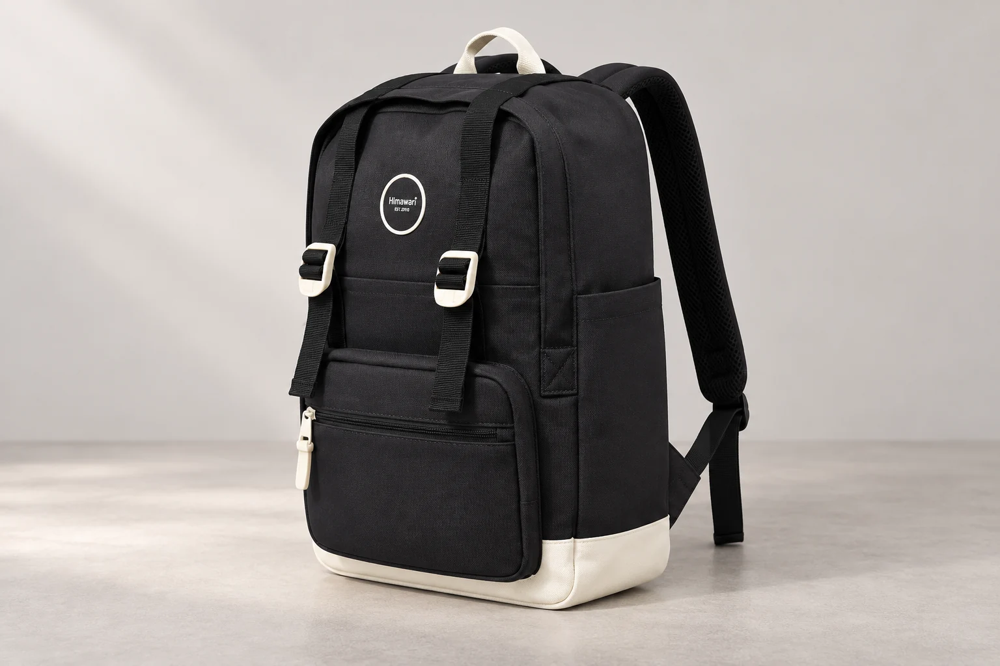

백팩 상세 사진은 한 장마다 다른 질문으로 읽기

온라인에서 백팩을 고를 때는 대표 사진에 먼저 눈이 갑니다. 색과 전체 인상이 마음에 들었다면 다음에는 사진마다 다른 질문을 두고 살펴볼 수 있습니다. 정면에서는 열리는 위치를, 옆면에서는 본체와 앞쪽 부분의 관계를, 내부에서는 물건을 넣고 꺼낼 방향을 봅니다. 같은 모습을 반복해 보는 대신 내가 쓰는 물건과 연결될 정보를 찾아보는 방식입니다.
처음에는 상품의 모델과 선택할 옵션을 적어둡니다. 한 페이지에 여러 크기와 색, 세트가 함께 소개되면 지금 보는 사진이 어떤 옵션인지 알아야 합니다. 이름 끝의 글자나 크기 표시를 생략하지 않고 대조하세요. 밝은 색 사진으로 구조를 살펴보더라도 그 구조가 선택한 색상과 크기에도 같은지 설명에서 확인합니다.
정면의 선을 바로 지퍼로 읽지 않기
앞면에 가로선이 보인다고 모두 열리는 부분이라고 생각하지 않습니다. 봉제선이나 덮개 가장자리일 수 있으므로 이어지는 여밈 부품과 설명을 함께 봅니다. 실제로 확인되는 만큼만 기록하고 선이 잘 보이지 않으면 다른 방향의 사진을 찾습니다. 열리는 모습을 담은 사진이 있으면 어떤 부품을 먼저 조작하는지도 살펴볼 수 있습니다.
정면에서 눈에 띄는 장식과 구성품은 따로 확인합니다. 붙어 있는 파우치처럼 보이는 물건이 해당 옵션에 포함되는지, 사진 촬영용 소품인지 판매 안내를 읽어봅니다. 이미지에 등장한다는 사실만으로 모든 구매에 딸려온다고 생각하지 않습니다. 어떤 물건인지 불분명하면 선택한 옵션의 포함 품목을 질문할 수 있습니다.
옆면과 내부에서 생기는 질문
옆면이나 사선 사진이 있다면 본체와 앞쪽 부분이 어떻게 겹치는지 봅니다. 정면에서는 넓어 보인 곳이 옆에서는 다르게 보일 수 있습니다. 사진에서 보이는 깊이를 실제 치수로 바꾸어 계산하지 않습니다. 필요한 공간의 숫자는 안내된 치수에서 확인하고, 무엇을 잰 값인지 표시가 없으면 문의할 항목으로 남깁니다.
이 글에 소개하는 Himawari No.1088M 제품 정보도 같은 방식으로 읽을 수 있습니다. 먼저 선택 옵션을 정하고, 사진으로 알아볼 질문과 설명으로 확인할 질문을 나누어봅니다. 예를 들어 케이스를 담고 싶다면 어떤 입구로 넣을지 사진에서 살펴본 뒤 실제 필요한 공간과 치수를 확인하는 순서입니다.

내부 사진에서는 주머니의 수를 세기 전에 입구가 열리는 방향을 봅니다. 자신이 자주 꺼낼 물건이 어디에 돌아갈지 생각하면 필요한 정보가 구체적입니다. 큰 물건을 먼저 빼야 작은 소품을 찾을 것 같은 배치라면 그 위치를 더 확인할 수 있습니다. 어둡게 가려진 곳에 무엇이 있는지 상상해 채우기보다 보이지 않는 부분의 자료를 찾습니다.
사진 속 소품은 배치의 예로 볼 수 있지만 내 물건의 수납을 바로 확정하는 자료는 아닙니다. 같은 이름의 기기나 물병이라도 케이스와 부속을 포함한 모습이 다를 수 있습니다. 자신의 물건을 평소 사용하는 상태로 준비하고 무엇을 비교할지 정합니다. 안내가 있는 칸이라면 어떤 크기의 공간을 말하는지도 함께 읽습니다.
이미지 옆의 설명도 함께 읽습니다. 제품 원본인지 연출 장면인지, 주변 물건은 별도 소품인지 안내가 있다면 그 범위에 맞춰 봅니다. 분위기를 표현한 장면과 실제 구성품을 펼친 자료는 선택에 쓰이는 용도가 다릅니다. 사진의 목적을 알고 보면 다음에 필요한 것이 내부 사진인지 옵션 설명인지 구체적으로 정할 수 있습니다.
착용 사진에서 볼 인상과 확인할 크기
착용 사진은 몸과 가방의 비율을 보는 참고로 사용할 수 있습니다. 착용자의 키나 자세, 촬영 방향이 다르면 내 모습과 같다고 생각하기 어렵습니다. 정면과 옆의 자료가 있다면 둘을 같이 보고 크기 정보도 대조합니다. 사진 한 장의 인상이 편해 보인다는 이유로 착용감까지 확인된 것으로 남기지 않습니다.
끈이 이어지는 모습처럼 사진에서 보이는 요소는 설명과 연결해 살펴볼 수 있습니다. 다만 어떤 조절이 가능한지나 별도 벨트가 포함되는지는 해당 옵션의 안내로 확인합니다. 이미지 밖의 구조를 상상해 기능으로 적지 않고, 필요한 질문에 답이 있는지 보는 것이 목적입니다. 내 물건을 넣고 사용할 조건도 제품 사진의 조건과 구분합니다.
주문 전에 남길 구체적인 문의
필요한 사진이 없을 때는 궁금한 부위를 특정합니다. '안쪽이 넓나요?'보다 '선택한 옵션의 이 입구로 닫힌 케이스를 넣을 수 있는지, 입구 치수를 확인하고 싶다'처럼 적을 수 있습니다. 모델과 옵션, 실제 물건의 크기를 함께 전하면 서로 다른 상품을 놓고 답하는 일을 줄입니다. 받은 답이 어떤 범위를 확인한 것인지도 알아봅니다.
자료를 읽으며 확인한 내용과 아직 질문할 내용을 두 목록으로 나누어두면 주문 직전에 보기 쉽습니다. 하나의 답을 받았다고 다른 조건도 모두 확인된 것으로 바꾸지 않습니다. 입구 치수를 들었다면 내부의 별도 구조는 필요에 따라 다시 확인합니다. 사진에서 보이는 것과 내가 쓰려는 상황 사이에 남은 질문을 줄여가는 과정입니다.
마지막에는 고른 옵션과 포함 품목, 크기 정보를 다시 대조합니다. 페이지의 대표 사진과 내가 주문할 옵션이 연결되는지 확인하고 필요한 답이 없는 부분은 판단을 미룰 수 있습니다. 실제 사용할 물건과 배치를 정했다면 그 정보를 바탕으로 비교하세요. 마음에 든 정면 사진에서 출발해 입구와 내부의 질문까지 이어져야 선택의 이유가 구체적으로 남습니다.